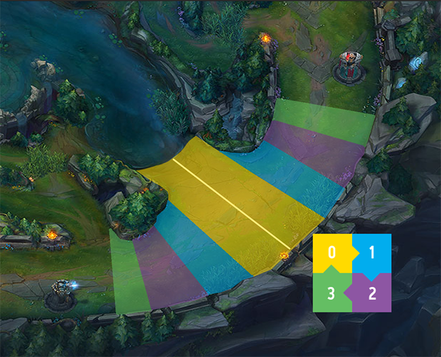

Minions spawn at the start of the game at 1:05, and they will continue to spawn in 30 second intervals afterwards. In every wave there are three melee minions and three caster minions. Every third wave before 20 minutes has a cannon minion as well. During the 20-35 minute marks every other wave will have a cannon minion. After 35 minutes there will be a cannon in every wave. Minions will also get very minor buffs towards other minions when the player gets ahead in lane. The minion targeting is based around a priority system. The enemy champion is the minion's first target if they are attacking the friendly champion with targeted skills (auto attacks, point and click spells, NOT skillshots and damage over time effects). Having a large minion wave while fighting an enemy champion can be very useful in providing extra damage to the enemy champion.
When the player wants to leave lane to back or roam on the map they should try to reset the wave. One way of resetting the wave is pushing your entire wave into the enemy turret. This will deny the opponent farm and experience and slow their wave down so you can leave the lane. Another way to reset the wave is to freeze it near your tower and leave while the lane is frozen. To freeze the wave you will want to leave 2-3 enemy caster minions alive and outside of your tower range. You will want to recall when the extra caster minions attack your next wave.
Freezing the wave is a harder lane management tool that can be very useful to dictate the lane. The distance that you can freeze the lane from your tower is dicated by the number of enemy ranged minions you will need to keep alive (See the Image Below). If you want to keep the the minion wave even you will want to keep it in the yellow zone in the image below. If there are more than four additional minions in a wave the wave will ALWAYS push. It is often beneficial to trim the wave by removing excess minions from the wave to maintain a freeze. Freezing near your tower is a very safe tactic as it makes your lane nearly ungankable and the enemy will have to overextend to get farm, this can set up easy ganks for your jungler.
Slow pushing is very simple to accomplish and understand. To slow push a wave all you have to do is kill the caster minions in the enemy wave. Another way to start a slow push is by having a minion advantage in your lane already. If you want to start a slow push on your side of the map you will want to have a 2-3 minion advantage over the enemy wave. If you want to start a slow push on the enemy side of the map you will need a 4-5 minion advantage.
Slow pushing is a technique that allows for some free time to make Macro (big picture) plays across the map. This is due to the fact that the lane is able to be productive without a laner there. When slow pushes get large enough, they can become threats to enemy turrets which can make taking dragon or baron easier as an enemy will have to respond to the large wave.
To fast push a wave the player needs to kill all of the melee and cannon minions. The player should also use abilities and auto attacks to speed up the process of fast pushing the wave. Fast pushing the wave can force an opponent to return to the lane as they would otherwise lose gold and experience. Before using Teleport the laner should fast push the wave.